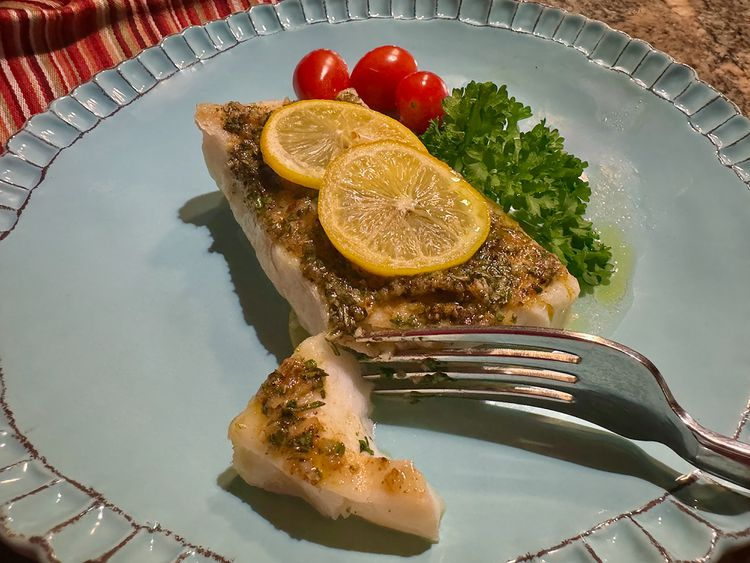

Baked Cod

- Prep Time: 10mins
- Cook Time: 15mins
- Total Time: 25mins
Serves: 4
Ingredients
- 3 tablespoons unsalted butter, softened
- 1 tablespoon finely minced fresh garlic
- 1 tablespoon minced fresh parsley
- 2 teaspoons minced fresh oregano
- 1 teaspoon minced fresh thyme or rosemary
- 1/2 teaspoon finely ground pink salt, or to taste
- 1/4 teaspoon freshly ground black pepper
- 1/2 teaspoon paprika
- 4 (6 ounce) cod filets
- 2 lemons, each cut into 8 thin slices
- 1 tablespoon extra virgin olive oil
- 4 sprigs fresh parsley for garnish (optional)
Directions
Step 1
Preheat the oven to 400 degrees F (200 degrees C).
Step 2
Place softened butter, minced garlic, parsley, oregano, and thyme or rosemary on a cutting board. Using a sharp knife, cut herbs and garlic into each other and the butter, cutting and mixing as you go. Add pink salt, black pepper, and paprika, and mix until well blended.
Step 3
Pat cod filets dry. In a 12x18-inch casserole or baking pan, place each filet on top of 2 lemon slices. Evenly divide herb butter mixture among the filets; use a fork or offset spatula to spread herb butter over filets. Top each filet with 2 remaining lemon slices.
Step 4
Bake in the preheated oven until cod flakes easily with a fork, 13 to 15 minutes. See note.
Step 5
To serve, drizzle each filet with extra virgin olive oil, and garnish with fresh parsley, if desired.